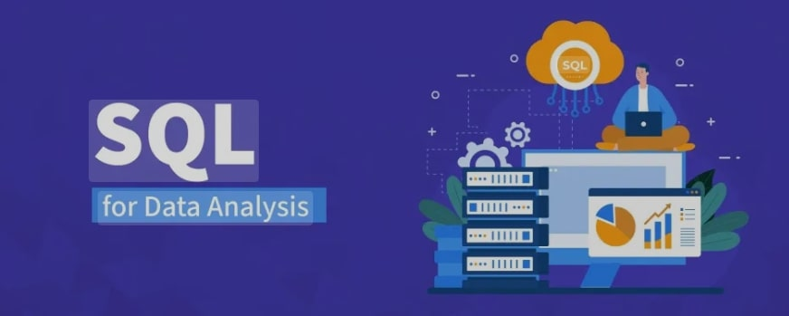

In this project i analyzed rider, driver, trip, and payment datasets using SQL Server to uncover key operational insights. The project involved data cleaning, integrity validation, and performance analysis to identify top drivers, city-level cancellation trends, and revenue growth patterns between 2021–2024. Delivered actionable findings on driver performance, customer behavior, and operational efficiency.

A complete SQL project on Stream-Verse, a simulated streaming platform database. Includes database schema creation, data insertion, and 10 advanced SQL challenges showcasing joins, subqueries, aggregation, and filtering techniques.
Analyzed Kogi State election data using Python’s geospatial libraries to detect irregular polling units. Applied proximity-based outlier detection to ensure data transparency and highlight potential anomalies in vote patterns.
This portfolio showcases my journey with Power Learn Project Africa, where I applied my training in Web Development, Python, and Database Management to build impactful solutions like Budget Buddy and TeleHealth Connect — blending technology, data, and purpose.
Analyzed the Superstore dataset (9,994 rows) to uncover how regional differences, discounts, and product categories influence sales and profit. Used Excel for cleaning, pivot-table analysis, and chart-based storytelling.
SureSave is an inclusive fintech solution designed during the Clan 3 Hackathon (January 2025) to help Nigerian tailors overcome financial instability caused by irregular income. The project focuses on auto-saving prompts, behavior-based reminders, and financial literacy features to encourage consistent savings habits among informal sector workers.
The Power BI Sales Dashboard 2025 is a comprehensive business intelligence tool built to deliver real-time visibility into sales performance, customer behavior, product trends, and operational efficiency. Using a dataset of over 1,000,000 orders and ~$401.98M in revenue, the dashboard consolidates key KPIs — such as order status, delivery rates, brand/category distribution, and seasonal fluctuations — into intuitive visualizations.